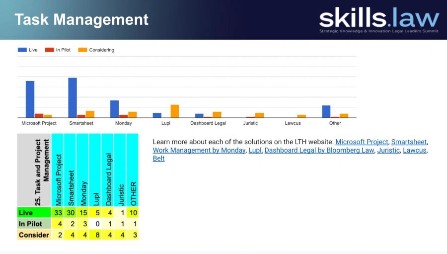

The Strategic Knowledge & Innovation Legal Leaders' Summit, SKILLS, serves the people who drive knowledge, innovation, and transformation in the world's leading law firms.
Educational programming for those leading knowledge, innovation, and transformation in law firms, legal departments, and LegalTech.
Weekly Zoom seminars featuring one use case and demos from several leading products.
Register here →Do you want to present a book that you recently wrote, or read, at the upcoming July 31 SKILLS Virtual Book Party?
Register here →Join us at ILTACON on Tuesday, August 25, for an evening of great conversations, food, and drinks and a fun night in Nashville, Tennessee!
Register here →
The Surveys provide insights into various topics of interest to knowledge and innovation professionals at law firms.
What Legal AI tools are the top law firms using for the various use cases.
Based on 130 law firms from Q4 2025What LegalTech vendors are most recommended by top law firms.
Based on 106 law firms from Q1 2026The Strategic Knowledge & Innovation Legal Leaders' Summit, SKILLS, serves the people who drive knowledge, innovation, and transformation in the world's leading law firms.
A privately organized in-person meeting for strategic firm leaders to compare notes on current developments in knowledge, innovation, and the business of law.
A public, live-streamed event available online, featuring a mix of rapid-fire presentations and strategic discussions that highlight the latest developments in the legal sector.
Insights into various topics of interest to knowledge and innovation professionals at law firms.
Seminars, workshops, and product demos, held live and virtual, throughout the year to educate those leading knowledge, innovation and transformation in law firms on concepts and tools relevant to their role.
A certification in development, designed to equip professionals with the legal context, operational knowledge, mindset, skills, and tools to thrive in AI, Data, KM, innovation, operations, and transformation roles across firms, legal departments, and legal-tech.
Aimed at raising money to support the next generation of LegalTech leaders and to honor Michael Mills' legacy.
“Founded in 2003, SKILLS has been hosted by Oz Benamram throughout the years. Each event has a single sponsor.”
About SKILLSOz Benamram founded SKILLS in 2003 and has hosted it throughout the years. He has spent his career building and leading the knowledge and innovation functions at some of the world's leading law firms, and today advises firm leaders, legal technology companies, and investors on legal transformation.
Chief AI Officer at Pillsbury Winthrop Shaw Pittman, where he is building the AI and Knowledge department. He previously built and led the knowledge and innovation departments at Simpson Thacher, White & Case, and Morrison & Foerster, and practiced law in the US and abroad earlier in his career.
Named one of 50 Legal Business Trailblazers and Pioneers by The National Law Journal in 2013, recognizing people who have moved the needle in how law firms conduct business. He earned a BA in Economics, magna cum laude, and an LLB from Tel Aviv University's Law School Honors Program.
A globally recognized thought leader and frequent speaker on legal knowledge and innovation, and co-author of Law, Reinvented: Leading AI Transformation in Legal Practice, a practical playbook covering strategy, pricing, team building, data, governance, adoption, risk, and the human side of change.
The weekly seminars take a single use case relevant to knowledge and innovation professionals, pair it with short demonstrations from several leading products, and open the floor to a live discussion. More than 20 sessions have covered topics such as contract negotiation, document automation, due diligence, legal research, governance, and task management.
Each Friday seminar focuses on one use case, so the community goes deep on the topic rather than skimming many at once.
Several leading products present short, focused demonstrations against that use case, followed by live questions from attendees.
Once the demonstrations conclude, legal participants stay on to discuss the use case among peers, with recordings and slides available afterward.
A peer community for those driving knowledge, innovation, and transformation across the legal world.
Virtual and in-person educational programming that equips the community with the knowledge, mindset, skills, and tools to thrive in AI, Data, KM, innovation, legal operations, and transformation roles.
Those holding roles in AI, Data, KM, innovation, legal operations, and transformation across law firms, legal departments, and LegalOps.
A peer-to-peer experience that pairs engaging educational content with live discussion, building valuable connections between leaders and peers across firms, legal departments, and LegalTech.
The Strategic Knowledge & Innovation Legal Leaders' Summit. Since 2003, it has served the people who drive knowledge, innovation, and transformation in the world's leading law firms through summits, showcases, surveys, seminars, and more.
Those who hold roles in AI, Data, KM, innovation, legal operations, and transformation across law firms, legal departments, and LegalOps.
SKILLS events are free to attend for law firms and legal departments.
A peer-to-peer experience that combines educational content with interactive discussion, held both live and virtual throughout the year, building connections between industry leaders and their peers.
Research into topics of interest to knowledge and innovation professionals, including the most used Legal AI products and the most recommended vendors among top firms.
Join the mailing list to hear about upcoming summits, showcases, seminars, and surveys, and follow along on LinkedIn and YouTube under SKILLS.law.